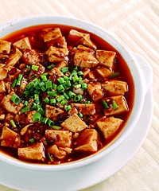

-
Chicken 65
2BD
-
chicken biryani
3.5BD
-
chicken lollipop
1.5BD
-
butter chicken
4BD
-
Chicken Masala
4.5BD
-
Dal Makhani
3BD
-
malai kofta
2.5BD
-
jadoh
1.5BD
-
Curry
2.5BD
-
Hummus
1.3BD
-
Tabbouleh
1.5BD
-
Falafel (6PCS)
1.1BD
-
Shawarma
1BD
-
grape leaves (5 PCS)
1.4BD
-
KIBBEH (6 PCS)
1.6BD
-
Noodles
1.8BD
-
Spring Rolls
1.9BD
-

mapo tofu
2.3BD
-
Wonton
3.2BD
-
jiaozi
2.2BD
-
fried rice
3.4BD
-
garlic bread (4 pcs)
1.2BD
-
pizza
3.2BD
-
pasta
3.6BD
-
chicken fingers (5Pcs)
2.2BD
-
cheese sticks (5Pcs)
1.4BD
-
Spaghetti
1.9BD
-
harees
1.2BD
-
majboos chicken
3.2BD
-
majboos hamour
3.8BD
-
mandei chicken
3.1BD
-
mandei beef
3.8BD
-
bokhari chicken
3.2BD